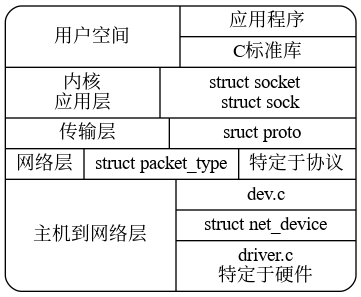
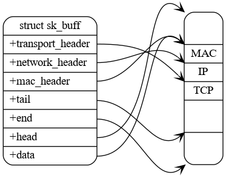
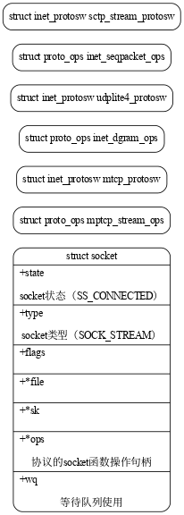

Linux 协议栈
Table of Contents
1 概览
- 内核中的网络分层

- 套接字缓冲区和网络分组数据之间的关联

unsigned char *skb_network_header(const struct sk_buff *skb); static inline void skb_reset_transport_header(struct sk_buff *skb) static inline void skb_set_transport_header(struct sk_buff *skb, const int offset) unsigned char *skb_transport_header(const struct sk_buff *skb); unsigned char *skb_mac_header(const struct sk_buff *skb); static inline void skb_reset_mac_header(struct sk_buff *skb) static inline void skb_set_mac_header(struct sk_buff *skb, const int offset) static inline void skb_reset_network_header(struct sk_buff *skb) static inline void skb_set_network_header(struct sk_buff *skb, const int offset)
套接字缓冲区等待队列 struct sk_buff_head
alloc_netdev ether_setup
register_netdev register_netdevice
2 socket缓存结构
linux中使用 sruct sk_buff 数据结构来描述已经接受或者代发送的数据报文信息。后续我们使用“SKB”来指代 struct sk_buff 。
SKB的操作函数以及宏定义设计以下文件：
- include/linux/skbuff.h，SKB结构定义以及宏定义。
- net/core/skbuff.c，操作SKB的函数。
2.1 sk_buff 结构
struct sk_buff结构定义比较复杂，其成员大致可以分为以下几类：
- 组织SKB的成员变量。
- 通用成员变量。
- 标志性成员变量。
- 与特性相关的成员变量。
SKB在不同的协议层之间传递，例如二层的MAC或者其他的链路层协议、三层的IP协议、四层的TCP或者UDP协议。在从四层向三层传递会添加四层首部，三层向二层传递会添加三层首部。内核通过在之前预留空间，通过移动指针指向来向头部添加数据，为此内核提供了skb_reserve()来完成这个功能。
网络模块中提供了许多有用的功能，这些功能不是必须的，例如防火墙。 但是为了支持这些功能，需要在sk_buff结构中包含成员变量，因此sk_buff结构中包含了很多 #ifdef 的预编译。
struct sk_buff { ... #ifdef CONFIG_NET_SCHED __u16 tc_index; /* traffic control index */ #endif ... };
以上代码中，tc_index 成员只有在编译时定义了CONFIG_NET_SCHED宏时才有效。通过在编译内核时，开启 “Networking->Networking options->Qos and/or fair queueing”选项来定义。
注意：上述的例子中，QoS不能被编译为内核模块，由于内核编译后，数据结构已经固定，不能动态变化。但是QoS需要向数据结构添加成员。一般来说，如果某些选项修改了内核数据结构，则包含该选项的组件就不能编译为内核模块。
SKB分为两个部分，一部分是SKB描述符（sk_buff结构本身），另一部分为数据缓冲区。
/** * struct sk_buff - socket buffer * @next: Next buffer in list * @prev: Previous buffer in list * @tstamp: Time we arrived/left * @skb_mstamp_ns: (aka @tstamp) earliest departure time; start point * for retransmit timer * @rbnode: RB tree node, alternative to next/prev for netem/tcp * @list: queue head * @sk: Socket we are owned by * @ip_defrag_offset: (aka @sk) alternate use of @sk, used in * fragmentation management * @dev: Device we arrived on/are leaving by * @dev_scratch: (aka @dev) alternate use of @dev when @dev would be %NULL * @cb: Control buffer. Free for use by every layer. Put private vars here * @_skb_refdst: destination entry (with norefcount bit) * @sp: the security path, used for xfrm * @len: Length of actual data * @data_len: Data length * @mac_len: Length of link layer header * @hdr_len: writable header length of cloned skb * @csum: Checksum (must include start/offset pair) * @csum_start: Offset from skb->head where checksumming should start * @csum_offset: Offset from csum_start where checksum should be stored * @priority: Packet queueing priority * @ignore_df: allow local fragmentation * @cloned: Head may be cloned (check refcnt to be sure) * @ip_summed: Driver fed us an IP checksum * @nohdr: Payload reference only, must not modify header * @pkt_type: Packet class * @fclone: skbuff clone status * @ipvs_property: skbuff is owned by ipvs * @inner_protocol_type: whether the inner protocol is * ENCAP_TYPE_ETHER or ENCAP_TYPE_IPPROTO * @remcsum_offload: remote checksum offload is enabled * @offload_fwd_mark: Packet was L2-forwarded in hardware * @offload_l3_fwd_mark: Packet was L3-forwarded in hardware * @tc_skip_classify: do not classify packet. set by IFB device * @tc_at_ingress: used within tc_classify to distinguish in/egress * @redirected: packet was redirected by packet classifier * @from_ingress: packet was redirected from the ingress path * @peeked: this packet has been seen already, so stats have been * done for it, don't do them again * @nf_trace: netfilter packet trace flag * @protocol: Packet protocol from driver * @destructor: Destruct function * @tcp_tsorted_anchor: list structure for TCP (tp->tsorted_sent_queue) * @_nfct: Associated connection, if any (with nfctinfo bits) * @nf_bridge: Saved data about a bridged frame - see br_netfilter.c * @skb_iif: ifindex of device we arrived on * @tc_index: Traffic control index * @hash: the packet hash * @queue_mapping: Queue mapping for multiqueue devices * @head_frag: skb was allocated from page fragments, * not allocated by kmalloc() or vmalloc(). * @pfmemalloc: skbuff was allocated from PFMEMALLOC reserves * @active_extensions: active extensions (skb_ext_id types) * @ndisc_nodetype: router type (from link layer) * @ooo_okay: allow the mapping of a socket to a queue to be changed * @l4_hash: indicate hash is a canonical 4-tuple hash over transport * ports. * @sw_hash: indicates hash was computed in software stack * @wifi_acked_valid: wifi_acked was set * @wifi_acked: whether frame was acked on wifi or not * @no_fcs: Request NIC to treat last 4 bytes as Ethernet FCS * @encapsulation: indicates the inner headers in the skbuff are valid * @encap_hdr_csum: software checksum is needed * @csum_valid: checksum is already valid * @csum_not_inet: use CRC32c to resolve CHECKSUM_PARTIAL * @csum_complete_sw: checksum was completed by software * @csum_level: indicates the number of consecutive checksums found in * the packet minus one that have been verified as * CHECKSUM_UNNECESSARY (max 3) * @dst_pending_confirm: need to confirm neighbour * @decrypted: Decrypted SKB * @napi_id: id of the NAPI struct this skb came from * @sender_cpu: (aka @napi_id) source CPU in XPS * @secmark: security marking * @mark: Generic packet mark * @reserved_tailroom: (aka @mark) number of bytes of free space available * at the tail of an sk_buff * @vlan_present: VLAN tag is present * @vlan_proto: vlan encapsulation protocol * @vlan_tci: vlan tag control information * @inner_protocol: Protocol (encapsulation) * @inner_ipproto: (aka @inner_protocol) stores ipproto when * skb->inner_protocol_type == ENCAP_TYPE_IPPROTO; * @inner_transport_header: Inner transport layer header (encapsulation) * @inner_network_header: Network layer header (encapsulation) * @inner_mac_header: Link layer header (encapsulation) * @transport_header: Transport layer header * @network_header: Network layer header * @mac_header: Link layer header * @kcov_handle: KCOV remote handle for remote coverage collection * @tail: Tail pointer * @end: End pointer * @head: Head of buffer * @data: Data head pointer * @truesize: Buffer size * @users: User count - see {datagram,tcp}.c * @extensions: allocated extensions, valid if active_extensions is nonzero */ struct sk_buff { union { struct { /* These two members must be first. */ struct sk_buff *next; struct sk_buff *prev; union { struct net_device *dev; /* Some protocols might use this space to store information, * while device pointer would be NULL. * UDP receive path is one user. */ unsigned long dev_scratch; }; }; struct rb_node rbnode; /* used in netem, ip4 defrag, and tcp stack */ struct list_head list; }; union { struct sock *sk; int ip_defrag_offset; }; union { ktime_t tstamp; u64 skb_mstamp_ns; /* earliest departure time */ }; /* * This is the control buffer. It is free to use for every * layer. Please put your private variables there. If you * want to keep them across layers you have to do a skb_clone() * first. This is owned by whoever has the skb queued ATM. */ char cb[48] __aligned(8); union { struct { unsigned long _skb_refdst; void (*destructor)(struct sk_buff *skb); }; struct list_head tcp_tsorted_anchor; }; #if defined(CONFIG_NF_CONNTRACK) || defined(CONFIG_NF_CONNTRACK_MODULE) unsigned long _nfct; #endif unsigned int len, data_len; __u16 mac_len, hdr_len; /* Following fields are _not_ copied in __copy_skb_header() * Note that queue_mapping is here mostly to fill a hole. */ __u16 queue_mapping; /* if you move cloned around you also must adapt those constants */ #ifdef __BIG_ENDIAN_BITFIELD #define CLONED_MASK (1 << 7) #else #define CLONED_MASK 1 #endif #define CLONED_OFFSET() offsetof(struct sk_buff, __cloned_offset) /* private: */ __u8 __cloned_offset[0]; /* public: */ __u8 cloned:1, nohdr:1, fclone:2, peeked:1, head_frag:1, pfmemalloc:1; #ifdef CONFIG_SKB_EXTENSIONS __u8 active_extensions; #endif /* fields enclosed in headers_start/headers_end are copied * using a single memcpy() in __copy_skb_header() */ /* private: */ __u32 headers_start[0]; /* public: */ /* if you move pkt_type around you also must adapt those constants */ #ifdef __BIG_ENDIAN_BITFIELD #define PKT_TYPE_MAX (7 << 5) #else #define PKT_TYPE_MAX 7 #endif #define PKT_TYPE_OFFSET() offsetof(struct sk_buff, __pkt_type_offset) /* private: */ __u8 __pkt_type_offset[0]; /* public: */ __u8 pkt_type:3; __u8 ignore_df:1; __u8 nf_trace:1; __u8 ip_summed:2; __u8 ooo_okay:1; __u8 l4_hash:1; __u8 sw_hash:1; __u8 wifi_acked_valid:1; __u8 wifi_acked:1; __u8 no_fcs:1; /* Indicates the inner headers are valid in the skbuff. */ __u8 encapsulation:1; __u8 encap_hdr_csum:1; __u8 csum_valid:1; #ifdef __BIG_ENDIAN_BITFIELD #define PKT_VLAN_PRESENT_BIT 7 #else #define PKT_VLAN_PRESENT_BIT 0 #endif #define PKT_VLAN_PRESENT_OFFSET() offsetof(struct sk_buff, __pkt_vlan_present_offset) /* private: */ __u8 __pkt_vlan_present_offset[0]; /* public: */ __u8 vlan_present:1; __u8 csum_complete_sw:1; __u8 csum_level:2; __u8 csum_not_inet:1; __u8 dst_pending_confirm:1; #ifdef CONFIG_IPV6_NDISC_NODETYPE __u8 ndisc_nodetype:2; #endif __u8 ipvs_property:1; __u8 inner_protocol_type:1; __u8 remcsum_offload:1; #ifdef CONFIG_NET_SWITCHDEV __u8 offload_fwd_mark:1; __u8 offload_l3_fwd_mark:1; #endif #ifdef CONFIG_NET_CLS_ACT __u8 tc_skip_classify:1; __u8 tc_at_ingress:1; #endif #ifdef CONFIG_NET_REDIRECT __u8 redirected:1; __u8 from_ingress:1; #endif #ifdef CONFIG_TLS_DEVICE __u8 decrypted:1; #endif #ifdef CONFIG_NET_SCHED __u16 tc_index; /* traffic control index */ #endif union { __wsum csum; struct { __u16 csum_start; __u16 csum_offset; }; }; __u32 priority; int skb_iif; __u32 hash; __be16 vlan_proto; __u16 vlan_tci; #if defined(CONFIG_NET_RX_BUSY_POLL) || defined(CONFIG_XPS) union { unsigned int napi_id; unsigned int sender_cpu; }; #endif #ifdef CONFIG_NETWORK_SECMARK __u32 secmark; #endif union { __u32 mark; __u32 reserved_tailroom; }; union { __be16 inner_protocol; __u8 inner_ipproto; }; __u16 inner_transport_header; __u16 inner_network_header; __u16 inner_mac_header; __be16 protocol; __u16 transport_header; __u16 network_header; __u16 mac_header; #ifdef CONFIG_KCOV u64 kcov_handle; #endif /* private: */ __u32 headers_end[0]; /* public: */ /* These elements must be at the end, see alloc_skb() for details. */ sk_buff_data_t tail; sk_buff_data_t end; unsigned char *head, *data; unsigned int truesize; refcount_t users; #ifdef CONFIG_SKB_EXTENSIONS /* only useable after checking ->active_extensions != 0 */ struct skb_ext *extensions; #endif };
2.1.1 SKB组织相关的变量
sk_buff结构中，很多结构是为了便于组织结构本身，例如下面两个变量。
struct sk_buff *next struct sk_buff *prev
通过这两个指针，将SKB连接成一个双向链表。此链表有一个要求：每个SKB必须能被整个链表头部快速找到，通过在第一个SKB节点前面插入另一个辅助的sk_buff_head结构的头节点，可以认为该sk_buff_head结构就是SKB链表的头节点。
struct sk_buff_head { /* These two members must be first. */ struct sk_buff *next; struct sk_buff *prev; /* SKB链表中的节点数量，即队列长度 */ __u32 qlen; /* 控制对SKB链表的并发操作的自选锁 */ spinlock_t lock; };
2.1.2 数据存储相关的变量
struct sock *sk
SKB的宿主传输控制块。SKB的宿主传输控制块在网络数据报文由本地发出或者由本地接受时才有效，使传输控制块与套接口及用户应用程序相关。当一个SKB仅在二层或者三层被转发时（即源IP和目的IP都不是本机地址），指针为NULL。
unsigned int len
SKB中数据部分长度，包括线性缓存区中数据长度（data指向），SG类型的聚合分散I/O的数据以及FRAGLIST类型的聚合分散I/O的数据长度。该字段值随着SKB从一个协议向另一个协议层传递而改变，向上传递时，下层首部不再需要，向下层传递时，需要添加本层首部。因此len也包含了协议首部的长度。
unsigned int mac_len
二层首部长度
void (*destructor)(struct sk_buff *skb)
SKB的析构函数指针，在释放SKB时被调用，完成一些必要的工作。在转发时，SKB没有宿主传输控制块，该指针通常为NULL。通常分别在skb_set_owner_t()和skb_set_owner_w()中被初始化成sock_rfree()和sock_wfree()。当释放SKB后，该SKB不再属于制定的传输控制块，因此要根据释放的SKB的truesize来调整传输控制块的接收和发送缓存区大小（sk_rmem_alloc和sk_wmem_alloc）。
unsigned char *head, *data, *tail, *end
head和end分别指向缓冲区的头和尾；data和tail分别指向数据的头和尾。在发送数据时，每一层协议在head和data之间填充协议首部数据，还可能在tail和end之间添加数据。
unsigned int trusize
整个数据缓冲区的总长度，包括SKB描述符和数据缓冲区部分（保活线性存储区和聚合分散I/O缓冲区）。
atomic_t users
引用计数，用来表示有多少实体引用了该SKB，用于确定SKB的释放时机，计数为0时，SKB才能被释放。注意该计数器之保护SKB描述符，SKB数据缓冲区也有类似的计数器。
2.1.3 通用的成员变量
struct skb_timeval tstamp
接收时间戳或者发送时间戳。通常在网络设备受到一个数据包之后，通过netif_receive_skb()或者netif_rx()调用net_timestamp()进行设置。
struct net_device *dev
网络设备指针。改组段的作用与SKB时发送包还是接收包有关。在初始化网络设备驱动分配接受缓存队列时，将该指针指向收到数据包的网络设备。
发送数据包时，该指针指向输出数据包的网络设备。
Linux支持多种形式的虚拟网络设备，并由一个虚拟网络设备驱动管理。当这个虚拟设备被使用时，dev指针指向该虚拟设备的net_device结构。在输出时，虚拟设备驱动会在一组设备中选择合适的设备，并将dev指针修改为指向这个设备的net_device结构。而在输入时，当院士网络设备接收到报文后，根据某种算法选择合适的虚拟网络设备，并将dev指针指向这个虚拟设备的net_device结构。因此，某些情况下，此指针会在包处理过程中改变。
struct net_device *input_dev
接收报文的原始网络设备。如果是本地生成的，则为NULL，主要用于流量控制。
__u16 transport_header,network_header,mac_header
分别代表各层协议首部的偏移量。
char cb[48]
SKB信息控制块，是每层协议的似有信息存储空间，由每一层协议自己维护并使用，并只在本层有效。在分配SKB时固定在SKB描述符中，当前为48字节，子沟为每一层协议存储必要的似有信息。在每个协议中，访问该字段的代码通常用宏实现以增强代码的可读性。例如，TCP用此成员存储tcp_sbk_cb结构的数据。
校验和
union { __wsum csum; struct { /* 计算校验和的起始位置相对于skb-head 的偏移量 */ __u16 csum_start; /* 校验和存储位置相对于csum_start的偏移 */ __u16 csum_offset; }; };
__u8 ip_summed:2
标记传输层校验和的状态。
__u8 cloned
标记所属SKB是否已经克隆。
__u8 pkt_type
帧类型，分类是由二层目的地址来决定，对于以太网设备来说，该字段由eth_type_trans()初始化。
__u32 priority
发送或者转发数据包QoS类别。如果数据包是本地生成的，套接口层会设置该字段；如果包是转发的，则rt_tos2priority()会根据IP首部中TOS域来计算该字段值。
__be16 protocol
从二层设备的角度看到的上层协议，即链路层承载的三层协议类型。典型的协议包括IP、IPv6和ARP。由于每个协议都有各自处理接收数据包的函数，因此该区域被设备驱动用来通知上层电泳那个协议处理函数。由于每个网络驱动都调用netif_rx()来通知上层网络协议的处理函数，因此protocol必须在这些协议处理函数调用前初始化。
2.1.4 标志性变量
__u8 nohdr:1
标识payload是否被单独引用，不存在协议首部。如果被引用，则决不能再修改协议首部，也不能通过skb->data来访问协议首部。
__u8 fclone:2
当前的克隆状态。
2.1.5 特性相关的成员变量
- __u8 nfct
- __u16 tc_index
2.2 skb_shared_info结构
/* This data is invariant across clones and lives at * the end of the header data, ie. at skb->end. */ struct skb_shared_info { __u8 flags; __u8 meta_len; __u8 nr_frags; __u8 tx_flags; unsigned short gso_size; /* Warning: this field is not always filled in (UFO)! */ unsigned short gso_segs; struct sk_buff *frag_list; struct skb_shared_hwtstamps hwtstamps; unsigned int gso_type; u32 tskey; /* * Warning : all fields before dataref are cleared in __alloc_skb() */ atomic_t dataref; /* Intermediate layers must ensure that destructor_arg * remains valid until skb destructor */ void * destructor_arg; /* must be last field, see pskb_expand_head() */ skb_frag_t frags[MAX_SKB_FRAGS]; };
2.2.1 零拷贝
2.2.2 对聚合分散I/O数据的支持
2.2.3 对GSO的支持
2.2.4 访问skb_shared_info结构
#define skb_shinfo(SKB) ((struct skb_shared_info *)(skb_end_pointer(SKB)))
sk_buff结构中并没有指向skb_shared_info结构的指针，可以通过上面的宏来访问skb_shared_info结构。
2.3 管理函数
2.3.1 SKB缓存池
/* Layout of fast clones : [skb1][skb2][fclone_ref] */ struct sk_buff_fclones { struct sk_buff skb1; struct sk_buff skb2; /* 引用计数，用于表示这一对SKB有几个被使用 */ refcount_t fclone_ref; }; void __init skb_init(void) { /* 创建skbuff_head_cache高速缓存，一般情况下，SKB都是从该缓存中分配 */ skbuff_head_cache = kmem_cache_create_usercopy("skbuff_head_cache", sizeof(struct sk_buff), 0, SLAB_HWCACHE_ALIGN|SLAB_PANIC, offsetof(struct sk_buff, cb), sizeof_field(struct sk_buff, cb), NULL); /* 创建skbuff_fclone_cache高速缓存。 如果在分配时知道SKB可能被克隆，那么应该从该高速缓存中分配SKB， 在此高速缓存中分配SKB时，会同时分配一个后备的SKB，便于将来克隆， 如此，在克隆时就无需再次分配SKB，提升效率。 */ skbuff_fclone_cache = kmem_cache_create("skbuff_fclone_cache", sizeof(struct sk_buff_fclones), 0, SLAB_HWCACHE_ALIGN|SLAB_PANIC, NULL); skb_extensions_init(); }
2.3.2 分配SKB
- alloc_skb()
- dev_alloc_skb()
2.3.3 释放SKB
2.3.4 数据预留和对齐
- skb_reverse()
- skb_push()
- skb_put()
- skb_pull()
2.3.5 克隆和复制SKB
- skb_clone()
- pskb_copy()
- skb_copy()
2.3.6 链表管理函数
- skb_queue_head_init()
- skb_quiue_head(), skb_queue_tail()
- skb_dequeue(), skb_dequeue_tail()
- skb_queue_purge()
- skb_queue_walk()
2.3.7 添加或删除尾部数据
- skb_add_data()
- skb_trim()
- pskb_trim()
2.3.8 拆分数据：skb_split()
2.3.9 重新分配SKB的线性数据区：pskb_expand_head()
2.3.10 其他函数
- pskb_may_pull()
- skb_queue_empty()
- skb_realloc_headroom()
- skb_get()
- skb_shared()
- skb_share_check()
- skb_unshare()
- skb_orphan()
- skb_cow()
- skb_pagelen()
* * * * * * * * * * * * * * *
3 网络设备初始化
本章主要介绍内核如何处理初始化内核模块，特别是网络驱动。
涉及的文件：
- include/linux/init.h，初始化相关的宏定义。
- include/asm-generic/vmlinux.lds.h，编译连接相关宏定义。
- init/main.c，启动时的高级初始化。
- net/core/dev.c，网络设备的注册、输入和输出等接口。
- drivers/net/e100.c，e100驱动程序。
3.1 网络模块的初始化顺序
start_kernel(); ... trap_init(); mm_init(); ftrace_init(); early_trace_init(); sched_init(); ... init_IRQ(); ... arch_call_rest_init(); rest_init(); kernel_thread(kernel_init, NULL, CLONE_FS); kernel_init(); kernel_init_freeable(); do_basic_setup(); cpuset_init_smp(); driver_init(); init_irq_proc(); do_ctors(); usermodehelper_enable(); do_initcalls();
有关网络的初始化过程主要由do_initcalls()完成，其不只是对网络模块进行初始化，只要是运用了initcall技术的模块都会被初始化。
每个内核模块都必须提供两个函数： module_init和module_exit()，前者在内核加载模块的时候被调用以初始化模块，后者在内核卸载模块时调用，用来释放该模块资源。
例如e100网络设备驱动（drivers/net/ethernet/intel/e100.c）：
module_param(debug, int, 0); module_param(eeprom_bad_csum_allow, int, 0); module_param(use_io, int, 0); MODULE_PARM_DESC(debug, "Debug level (0=none,...,16=all)"); MODULE_PARM_DESC(eeprom_bad_csum_allow, "Allow bad eeprom checksums"); MODULE_PARM_DESC(use_io, "Force use of i/o access mode"); ... static int __init e100_init_module(void) {} static void __exit e100_cleanup_module(void) {} ... module_init(e100_init_module); module_exit(e100_cleanup_module);
3.2 优化基于宏的标记
宏 使用宏的函数说明 __init 启动时初始化函数，再启动阶段执行，通常只执行一次。后期不再需要，这种函数在初始化完成后被从内存中清除 __exit 和__init匹配，相关内核组件卸载时调用 early_initcall core_initcall postcore_initcall arch_initcall subsys_initcall 用于标记启动时需要执行的初始化函数 fs_initcall rootfs_initcall device_initcall late_initcall __initcall device_init的别名 __exitcall 标识退出函数，相关内核组件卸载时调用。通常仅用于标记module_exit函数。
宏 使用宏的数据结构说明 __initdata 仅在启动时用于已初始化的数据结构 __exitdata 仅被由__exitcall修饰的函数使用的数据结构
3.3 网络设备处理层初始化
| 文件 | 初始化函数及宏 | 说明 |
|---|---|---|
| net/socket.c | core_initcall(sock_init) | 套接口层的初始化函数 |
| net/core/sock.c | subsys_initcall(proto_init) | 传输层的初始化函数 |
| net/ipv4/af_inet.c | fs_initcall(inet_init) | Internet协议族的初始化函数 |
| net/core/dev.c | subsys_initcall(net_dev_init) | 设备处理层的初始化函数 |
| drivers/net/ethernet/intel/e100.c | module_init(e100_init_module) | e100幸好的网络设备驱动程序的初始化函数 |
其中 sock_init()、proto_init()、inet_init()初始化函数设计网络的三层、四层协议。本章主要介绍net_dev_init()和e100_init_module()这两个初始化函数。
3.4 pci设备驱动简介
3.4.1 数据结构
pci_device_id 根据PCI标准定义的ID
struct pci_device_id { __u32 vendor, device; /* Vendor and device ID or PCI_ANY_ID*/ __u32 subvendor, subdevice; /* Subsystem ID's or PCI_ANY_ID */ __u32 class, class_mask; /* (class,subclass,prog-if) triplet */ kernel_ulong_t driver_data; /* Data private to the driver */ };
- pci_dev 每个PCI设备都会分配一个pci_dev实例
pci_driver 定义pic层和设备驱动程序之间的接口
struct pci_driver { struct list_head node; /* 驱动程序名称 */ const char *name; /* id向量, 内核用于把一些设备关联到此驱动程序 */ const struct pci_device_id *id_table; /* 当pci发现正在查找驱动程序的设备的id和上面的id_table 匹配, 会调用此函数 此函数应当开启硬件, 分配net_device结构, 初始化并注册新设备,分配所需的数据结构 */ int (*probe)(struct pci_dev *dev, const struct pci_device_id *id); /* 当内核移除驱动程序或者热插拔设备移除时, pci调用此函数, 用于清理工作 网络设备使用此函数来释放分配的I/O端口和I/O内存,为设备除名,释放net_device结构和probe函数分配的数据结构 */ void (*remove)(struct pci_dev *dev); /* 设备挂起时调用*/ int (*suspend)(struct pci_dev *dev, pm_message_t state); /* 设备唤醒时调用 */ int (*resume)(struct pci_dev *dev); /* 关机时调用 */ void (*shutdown)(struct pci_dev *dev); /* 当通过sysfs中的 sriov_numvfs文件开启多个VF时的驱动回调函数 */ int (*sriov_configure)(struct pci_dev *dev, int num_vfs); const struct pci_error_handlers *err_handler; const struct attribute_group **groups; /* 驱动模型结构 */ struct device_driver driver; /* 动态添加的设备ID列表*/ struct pci_dynids dynids; };
3.5 设备驱动 ixgbe
static struct pci_driver ixgbe_driver = { .name = ixgbe_driver_name, .id_table = ixgbe_pci_tbl, .probe = ixgbe_probe, .remove = ixgbe_remove, .driver.pm = &ixgbe_pm_ops, .shutdown = ixgbe_shutdown, .sriov_configure = ixgbe_pci_sriov_configure, .err_handler = &ixgbe_err_handler };
/** * ixgbe_init_module - Driver Registration Routine * * ixgbe_init_module is the first routine called when the driver is * loaded. All it does is register with the PCI subsystem. **/ static int __init ixgbe_init_module(void) { int ret; pr_info("%s\n", ixgbe_driver_string); pr_info("%s\n", ixgbe_copyright); ixgbe_wq = create_singlethread_workqueue(ixgbe_driver_name); if (!ixgbe_wq) { pr_err("%s: Failed to create workqueue\n", ixgbe_driver_name); return -ENOMEM; } ixgbe_dbg_init(); ret = pci_register_driver(&ixgbe_driver); if (ret) { destroy_workqueue(ixgbe_wq); ixgbe_dbg_exit(); return ret; } #ifdef CONFIG_IXGBE_DCA dca_register_notify(&dca_notifier); #endif return 0; } module_init(ixgbe_init_module);
3.6 napi
ixgbe_probe ixgbe_init_interrupt_scheme ixgbe_alloc_q_vectors ixgbe_alloc_q_vector netif_napi_add
3.7 设备和内核的交互方式
- 中断
- 轮训
3.7.1 中断类型
- 接收一帧
- 传输失败
- DMA传输完成
- 设备有足够的内存处理新传输
/** * e1000_request_irq - initialize interrupts * @adapter: board private structure * * Attempts to configure interrupts using the best available * capabilities of the hardware and kernel. **/ static int e1000_request_irq(struct e1000_adapter *adapter);
3.8 net_dev_init
/* * Initialize the DEV module. At boot time this walks the device list and * unhooks any devices that fail to initialise (normally hardware not * present) and leaves us with a valid list of present and active devices. * */ /* * This is called single threaded during boot, so no need * to take the rtnl semaphore. */ static int __init net_dev_init(void) { int i, rc = -ENOMEM; BUG_ON(!dev_boot_phase); if (dev_proc_init()) goto out; if (netdev_kobject_init()) goto out; INIT_LIST_HEAD(&ptype_all); for (i = 0; i < PTYPE_HASH_SIZE; i++) INIT_LIST_HEAD(&ptype_base[i]); INIT_LIST_HEAD(&offload_base); if (register_pernet_subsys(&netdev_net_ops)) goto out; /* * Initialise the packet receive queues. */ for_each_possible_cpu(i) { struct work_struct *flush = per_cpu_ptr(&flush_works, i); struct softnet_data *sd = &per_cpu(softnet_data, i); INIT_WORK(flush, flush_backlog); skb_queue_head_init(&sd->input_pkt_queue); skb_queue_head_init(&sd->process_queue); #ifdef CONFIG_XFRM_OFFLOAD skb_queue_head_init(&sd->xfrm_backlog); #endif INIT_LIST_HEAD(&sd->poll_list); sd->output_queue_tailp = &sd->output_queue; #ifdef CONFIG_RPS INIT_CSD(&sd->csd, rps_trigger_softirq, sd); sd->cpu = i; #endif init_gro_hash(&sd->backlog); sd->backlog.poll = process_backlog; sd->backlog.weight = weight_p; } dev_boot_phase = 0; /* The loopback device is special if any other network devices * is present in a network namespace the loopback device must * be present. Since we now dynamically allocate and free the * loopback device ensure this invariant is maintained by * keeping the loopback device as the first device on the * list of network devices. Ensuring the loopback devices * is the first device that appears and the last network device * that disappears. */ if (register_pernet_device(&loopback_net_ops)) goto out; if (register_pernet_device(&default_device_ops)) goto out; open_softirq(NET_TX_SOFTIRQ, net_tx_action); open_softirq(NET_RX_SOFTIRQ, net_rx_action); rc = cpuhp_setup_state_nocalls(CPUHP_NET_DEV_DEAD, "net/dev:dead", NULL, dev_cpu_dead); WARN_ON(rc < 0); rc = 0; out: return rc; } subsys_initcall(net_dev_init);
- 注册到proc文件系统
- 注册到sys文件系统
- 注册netdev_net_ops子系统(网络命名空间创建或者删除时调用)
- 初始化每个cpu的数据包接收队列
- 注册网络命名空间设备loopback_net_ops
- 注册网络命名空间设备default_device_ops
- 分别注册软中断NET_TX_SOFTIRQ和NET_RX_SOFTIRQ (net_tx_action和net_rx_action)
3.9 虚拟设备
- 绑定（bonding） 将多个物理设备绑定为一个虚拟设备
- 802.1Q VLAN
- 桥接（bridge）
- 别名接口
- 普通均衡器 用于流量控制
- 隧道接口
- ……
4 接口层的输入
* * * * * * * *
4.1 netpoll
4.1.1 netpoll相关结构
4.1.2 注册netpoll实例

4.1.3 netpoll输入
* * * * * * *
5 网络命名空间
5.1 网络命名空间的构造/析构链表
/* 保存注册的网络命名空间子系统的链表头 */ static LIST_HEAD(pernet_list); static struct list_head *first_device = &pernet_list; /* 保存所有的网络命名空间 */ LIST_HEAD(net_namespace_list);
5.2 register_pernet_subsys
int register_pernet_subsys(struct pernet_operations *ops);
最终调用函数 __register_pernet_operations
static int __register_pernet_operations(struct list_head *list, struct pernet_operations *ops) { struct net *net; int error; /* 添加至链表尾部 */ list_add_tail(&ops->list, list); if (ops->init || (ops->id && ops->size)) { /* 遍历所有的网络命名空间，并通过ops_init调用ops的init函数 */ for_each_net(net) { error = ops_init(ops, net); /* 将调用过的命名空间保存至net_exit_list链表， 以便错误处理 */ list_add_tail(&net->exit_list, &net_exit_list); } } }
首先将 ops 添加到pernet_list的末尾， 然后为每个已经存在的网络命名空间调用子系统的init函数。
当网络命名空间被创建时，所有注册的子系统的init函数将按照注册顺序调用。 命名空间销毁时，exit函数按照相反的顺序调用。
5.3 register_pernet_device
int register_pernet_device(struct pernet_operations *ops);
和register_pernet_subsys相同， 不过是用来注册设备。用来在命名空间中创建网络设备。
6 软中断 NET_TX_SOFTIRQ和NET_RX_SOFTIRQ
open_softirq(NET_TX_SOFTIRQ, net_tx_action); open_softirq(NET_RX_SOFTIRQ, net_rx_action);
6.1 net_tx_action
6.2 net_rx_action
7 L4传输层
7.1 proto_register
7.2 tcp
struct proto tcp_prot = { .name = "TCP", .owner = THIS_MODULE, .close = tcp_close, .pre_connect = tcp_v4_pre_connect, .connect = tcp_v4_connect, .disconnect = tcp_disconnect, .accept = inet_csk_accept, .ioctl = tcp_ioctl, .init = tcp_v4_init_sock, .destroy = tcp_v4_destroy_sock, .shutdown = tcp_shutdown, .setsockopt = tcp_setsockopt, .getsockopt = tcp_getsockopt, .bpf_bypass_getsockopt = tcp_bpf_bypass_getsockopt, .keepalive = tcp_set_keepalive, .recvmsg = tcp_recvmsg, .sendmsg = tcp_sendmsg, .sendpage = tcp_sendpage, .backlog_rcv = tcp_v4_do_rcv, .release_cb = tcp_release_cb, .hash = inet_hash, .unhash = inet_unhash, .get_port = inet_csk_get_port, .enter_memory_pressure = tcp_enter_memory_pressure, .leave_memory_pressure = tcp_leave_memory_pressure, .stream_memory_free = tcp_stream_memory_free, .sockets_allocated = &tcp_sockets_allocated, .orphan_count = &tcp_orphan_count, .memory_allocated = &tcp_memory_allocated, .memory_pressure = &tcp_memory_pressure, .sysctl_mem = sysctl_tcp_mem, .sysctl_wmem_offset = offsetof(struct net, ipv4.sysctl_tcp_wmem), .sysctl_rmem_offset = offsetof(struct net, ipv4.sysctl_tcp_rmem), .max_header = MAX_TCP_HEADER, .obj_size = sizeof(struct tcp_sock), .slab_flags = SLAB_TYPESAFE_BY_RCU, .twsk_prot = &tcp_timewait_sock_ops, .rsk_prot = &tcp_request_sock_ops, .h.hashinfo = &tcp_hashinfo, .no_autobind = true, .diag_destroy = tcp_abort, }; EXPORT_SYMBOL(tcp_prot);
struct proto udp_prot = { .name = "UDP", .owner = THIS_MODULE, .close = udp_lib_close, .pre_connect = udp_pre_connect, .connect = ip4_datagram_connect, .disconnect = udp_disconnect, .ioctl = udp_ioctl, .init = udp_init_sock, .destroy = udp_destroy_sock, .setsockopt = udp_setsockopt, .getsockopt = udp_getsockopt, .sendmsg = udp_sendmsg, .recvmsg = udp_recvmsg, .sendpage = udp_sendpage, .release_cb = ip4_datagram_release_cb, .hash = udp_lib_hash, .unhash = udp_lib_unhash, .rehash = udp_v4_rehash, .get_port = udp_v4_get_port, .memory_allocated = &udp_memory_allocated, .sysctl_mem = sysctl_udp_mem, .sysctl_wmem_offset = offsetof(struct net, ipv4.sysctl_udp_wmem_min), .sysctl_rmem_offset = offsetof(struct net, ipv4.sysctl_udp_rmem_min), .obj_size = sizeof(struct udp_sock), .h.udp_table = &udp_table, .diag_destroy = udp_abort, }; EXPORT_SYMBOL(udp_prot);
struct proto raw_prot = { .name = "RAW", .owner = THIS_MODULE, .close = raw_close, .destroy = raw_destroy, .connect = ip4_datagram_connect, .disconnect = __udp_disconnect, .ioctl = raw_ioctl, .init = raw_sk_init, .setsockopt = raw_setsockopt, .getsockopt = raw_getsockopt, .sendmsg = raw_sendmsg, .recvmsg = raw_recvmsg, .bind = raw_bind, .backlog_rcv = raw_rcv_skb, .release_cb = ip4_datagram_release_cb, .hash = raw_hash_sk, .unhash = raw_unhash_sk, .obj_size = sizeof(struct raw_sock), .useroffset = offsetof(struct raw_sock, filter), .usersize = sizeof_field(struct raw_sock, filter), .h.raw_hash = &raw_v4_hashinfo, #ifdef CONFIG_COMPAT .compat_ioctl = compat_raw_ioctl, #endif .diag_destroy = raw_abort, };
struct proto ping_prot = { .name = "PING", .owner = THIS_MODULE, .init = ping_init_sock, .close = ping_close, .connect = ip4_datagram_connect, .disconnect = __udp_disconnect, .setsockopt = ip_setsockopt, .getsockopt = ip_getsockopt, .sendmsg = ping_v4_sendmsg, .recvmsg = ping_recvmsg, .bind = ping_bind, .backlog_rcv = ping_queue_rcv_skb, .release_cb = ip4_datagram_release_cb, .hash = ping_hash, .unhash = ping_unhash, .get_port = ping_get_port, .obj_size = sizeof(struct inet_sock), }; EXPORT_SYMBOL(ping_prot);
/* thinking of making this const? Don't. * early_demux can change based on sysctl. */ static struct net_protocol tcp_protocol = { .early_demux = tcp_v4_early_demux, .early_demux_handler = tcp_v4_early_demux, .handler = tcp_v4_rcv, .err_handler = tcp_v4_err, .no_policy = 1, .netns_ok = 1, .icmp_strict_tag_validation = 1, }; /* thinking of making this const? Don't. * early_demux can change based on sysctl. */ static struct net_protocol udp_protocol = { .early_demux = udp_v4_early_demux, .early_demux_handler = udp_v4_early_demux, .handler = udp_rcv, .err_handler = udp_err, .no_policy = 1, .netns_ok = 1, }; static const struct net_protocol icmp_protocol = { .handler = icmp_rcv, .err_handler = icmp_err, .no_policy = 1, .netns_ok = 1, };
8 结构
struct socket { //socket 状态 socket_state state; //socket 类型（SOCK_STREAM SOCK_DGRAM...） short type; unsigned long flags; struct file *file; struct sock *sk; //协议的socket操作函数句柄 const struct proto_ops *ops; //等待队列使用 struct socket_wq wq; };

9 零拷贝技术
9.1 sendfile
**
**
10 linux协议栈参数汇总
10.1 /proc/net/tcp
netstat 就是基于该文件来统计信息
tcp_diag 内核模块已经取代了此接口，使用tcp_diag模块获取统计信息更为高效，ss就是基于 tcp_diag 模块来统计信息。
46: 010310AC:9C4C 030310AC:1770 01 | | | | | |--> connection state | | | | |------> remote TCP port number | | | |-------------> remote IPv4 address | | |--------------------> local TCP port number | |---------------------------> local IPv4 address |----------------------------------> number of entry 00000150:00000000 01:00000019 00000000 | | | | |--> number of unrecovered RTO timeouts | | | |----------> number of jiffies until timer expires | | |----------------> timer_active (see below) | |----------------------> receive-queue |-------------------------------> transmit-queue 1000 0 54165785 4 cd1e6040 25 4 27 3 -1 | | | | | | | | | |--> slow start size threshold, | | | | | | | | | or -1 if the threshold | | | | | | | | | is >= 0xFFFF | | | | | | | | |----> sending congestion window | | | | | | | |-------> (ack.quick<<1)|ack.pingpong | | | | | | |---------> Predicted tick of soft clock | | | | | | (delayed ACK control data) | | | | | |------------> retransmit timeout | | | | |------------------> location of socket in memory | | | |-----------------------> socket reference count | | |-----------------------------> inode | |----------------------------------> unanswered 0-window probes |---------------------------------------------> uid
timer_active:
| 0 | no timer is pending |
| 1 | retransmit-timer is pending |
| 2 | another timer (e.g. delayed ack or keepalive) is pending |
| 3 | this is a socket in TIME_WAIT state. Not all fields will contain data (or even exist) |
| 4 | zero window probe timer is pending |